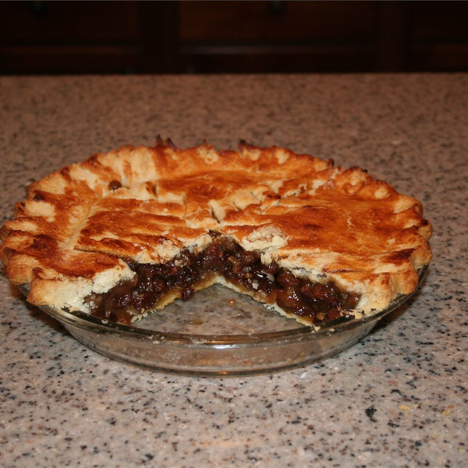

Simple Raisin Pie

Description
Very nice raisin pie, very simple, very easy to do, but even easier to
eat.
Ingredients
- 2 (9 inch) pie shell
- 2 cups water
- ½ cup white sugar
- 2 tablespoons all-purpose flour
- ¼ teaspoon salt
- ½ teaspoon vanilla extract
- 1 tablespoon butter
- 1 tablespoon lemon juice
- 2 cups raisins
Steps
- Preheat oven to 450 degrees F (225 degrees C).
-
In a large saucepan, combine water, sugar, flour, salt, vanilla, butter
or margarine, and lemon juice. Mix well, then stir in raisins. Simmer
over low heat for 10 minutes, stirring frequently. Remove from heat.
-
Pour raisin mixture into pastry-lined pie pan. Cover with second pastry.
Seal edges and cut steam vents in top.
-
Bake in preheated oven for 15 minutes, then lower the heat to 350
degrees F (175 degrees C) and bake an additional 25 to 30 minutes.